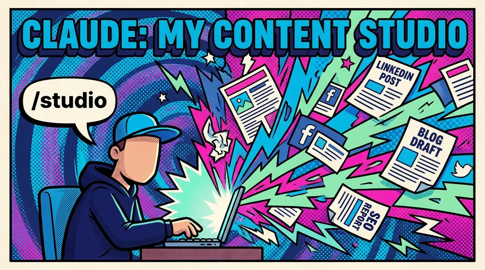

You've done it. You've opened Claude, typed "write me a LinkedIn post about AI leadership," and gotten back something that sounds like everyone else. Polished. Correct. Completely generic.
So you try again. You add more detail to the prompt. You say "make it sound like me." It gets a little better. But it still doesn't land. It doesn't sound like you. It doesn't know your audience. It doesn't understand the difference between what you'd post on LinkedIn versus what you'd put on your blog.
Sunday I took a day off from the team project. Instead, I spent the day learning Claude Code and studying how Every.to runs their company. And I built something for myself: a content studio that spans all the projects I'm working on. CAIO Coach, AI Officer Institute, Edge8, my personal blog. One system, multiple brands, all from the command line.
Here's how it works.
The Three Layers of a Content Studio
Most people focus entirely on what they ask AI to do. The prompt, the task, the output they want. But the quality of what AI produces is determined just as much by what it knows before you ask. It's what we call "the other 50%" and it is the stuff you set up once that makes everything after it better.
Building a content studio means building that onboarding. It breaks down into three layers:
1. Context: The Data and Information Layer
This is everything AI needs to know about you before it writes a single word. Your voice. Your audience. Your credentials. Your channels and the specific rules for each one.
When I write for CAIO Coach, the context is different than when I write for AI Officer Institute or Edge8. The audiences are different. The angle is different. On CAIO Coach, I'm a coach helping you find your own answers. On Edge8, I'm talking to CTOs about staffing decisions. Same author, completely different energy.
That context lives in a structured document that AI reads before it starts working. It includes my author voice, audience personas, active channels, and the formatting rules for each one. Every channel has its own style. Every audience has its own pain points. If you haven't given AI this information, you're asking it to guess. And it will guess wrong every time.
2. Instructions: The Rules of Engagement
Context tells AI who you are. Instructions tell it how to work.
Without instructions, AI will skip steps. It'll jump straight to a draft without understanding the idea. It'll produce a blog post but forget the social posts. It'll write something that sounds fine but doesn't follow the process that makes content actually good: the back and forth, the pushback, the "is this section really earning its place?"
Instructions are the playbook. What to do, what not to do, when to ask questions versus just write, and where the approval gates are. They're not complicated. But they're the difference between AI that follows a process and AI that wings it.
3. Workflow: The Production Process
This is the part almost nobody builds. Most people treat AI as a one-shot tool: ask a question, get an answer, move on. But content production isn't a single prompt. It's a process.
My blog workflow has phases: develop the idea with clarifying questions, pick a style, build an outline, run an editorial critique, draft, iterate, get approval, then produce everything. Social posts for every channel, SEO and AI search optimization, even image generation prompts. Each step builds on the last. The AI pushes back, suggests angles, asks if something is missing. It's a thought partner, not a vending machine.
Without workflow, you get one-off outputs. With workflow, you get a production system.
The Framework Maps Directly to Claude Code
Here's what clicked for me on Sunday. The three layers we teach: data, instructions, workflow. They aren't just concepts. They map directly to actual features in Claude Code:
| What We Teach | What It Is in Claude Code |
|---|---|
| Data | Context files — structured documents Claude reads before it writes. Your voice, audience, channels, credentials. |
| Logic | Instructions — the CLAUDE.md file that tells Claude how to work, what rules to follow, where the gates are. |
| Workflow | Skills — slash commands that chain the whole process together into a repeatable production system. |
This is what makes it real. Not theory. Actual files, actual commands, actual system.
None of this is advanced. Data, logic, workflow: these are foundational skills. The same ones we teach in our certification programs. The people who learn the foundations first are the ones who can build things like this in an afternoon. The people who skip straight to "write me a blog post" are the ones still getting generic output six months from now.
What I Actually Built
I built this entire content studio using Claude Code.
Yes, Claude Code. The tool most people think of as a developer's command line. Not a writing tool. Not a content platform. A coding tool.
But here's what makes it incredibly fast for content production: I type /studio, and I'm immediately in my content production system. Claude reads the right context files (data), follows the instructions (logic), and runs the skill (workflow). No copy-pasting prompts. No re-explaining my voice every session.
In a single conversation, I set up four brands, each with its own context: voice, audience, and channel rules. I built a second skill, /onboard, that can interview a new client and build their entire content studio from scratch. The system has editorial lenses baked in: one that critiques the structure of every piece at the outline stage, another that reviews SEO implementation for search and AI discoverability. It even generates image prompts and can hit the Nanobanana API to produce the social card. All without leaving the terminal.
The result: I go from a raw idea to a full blog post, social posts for every active channel, SEO optimization, and a generated image. All in one session. One person. Multiple brands.
That's not AI replacing a content team. That's one person doing more, and doing it better, than they could before.
What This Means For You
Here's the coaching question: how much context have you actually given your AI tools?
If the answer is "I just type a prompt and see what happens," you're working with 50% of what's possible.
The other 50% isn't technical. You don't need to be a developer. You don't need to write code. You need to think honestly about three things:
When was the last time you wrote down what makes your voice yours? Not "professional and approachable," but the actual way you think, argue, and close?
Do you know who you're really talking to on each channel? Not "business leaders." What they're afraid of, what they're ignoring, and what would make them stop scrolling?
And do you have a process, or do you just open a blank chat and hope for the best?
Write that down. Structure it. Give it to your AI tools.